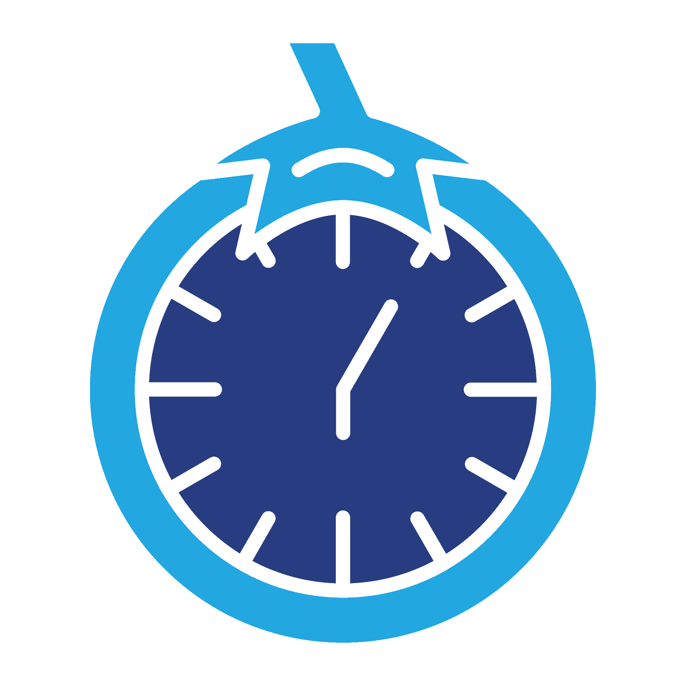

Pomodoro
The Pomodoro Technique allows you to focus on your work with periods of breaks in between to reset and maximize your productivity!
Enter in your desired work time interval (usually is 25 minutes)
Then enter your break interval (usually is 5 minutes)
Please enter integer minutes only
